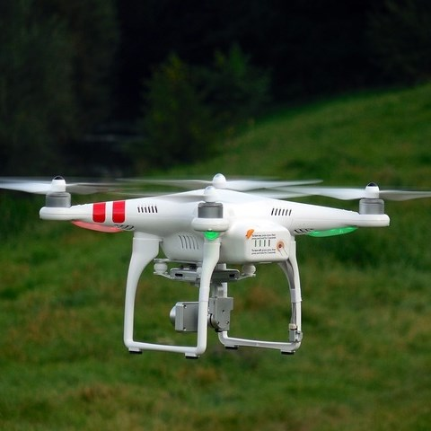

Sullivan TSA
2016 Design Brief Solution
If you do not know what UAS Technology is, view the information below to get a general understanding of what it is in our society. Otherwise, use the links on the navigation bar to navigate the website.

If you do not know what UAS Technology is, view the information below to get a general understanding of what it is in our society. Otherwise, use the links on the navigation bar to navigate the website.
Unmanned Aerial Systems (or UAS for short) are flying "tools" of technology that allow the user to go to and view places that cannot be reached or seen by the naked eye. These machines are sometimes called "drones."
